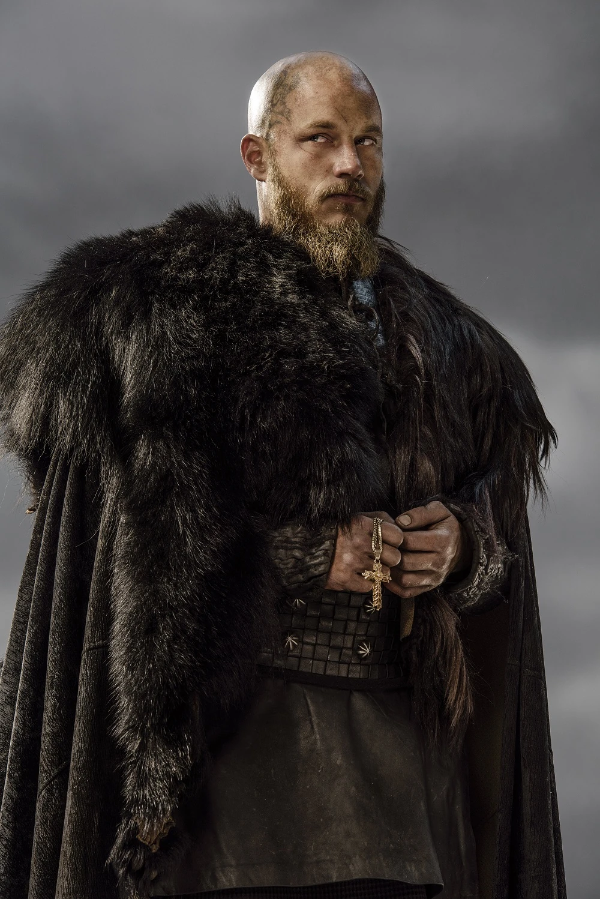
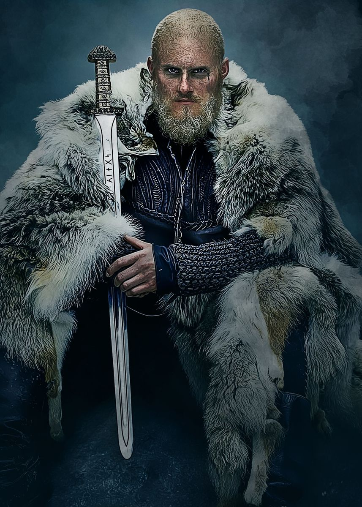
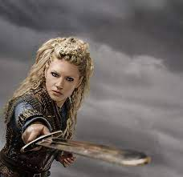

Ragnar Lothbrok
Ragnar Lodbrok foi um rei lendário da Dinamarca e da Suécia, que teria reinado durante os séculos VIII e IX. Segundo a Saga de Ragnar Lodbrok, as "calças felpudas" (lodbrok) de Ragnar Lodbrok eram umas calças de pele de lobo, fervidas em breu, confecionadas para ele enfrentar e matar a serpente monstruosa e muito venenosa que guardava a princesa Tora Borgarhjort
Bjorn Ironside
Biorno Braço de Ferro foi um lendário caudilho viquingue, de origem dinamarquesa, que teria vivido no século IX. Segundo a lenda, a alcunha Järnsida foi-lhe atribuída por ele ser "invulnerável", depois de a mãe lhe ter dado uma poção mágica.
Lagertha
Lagertha foi, de acordo com as lendas locais, uma skjaldmö viking que viveu no território da atual Noruega, tendo sido a primeira esposa do célebre guerreiro viking Ragnar Lodbrok.
